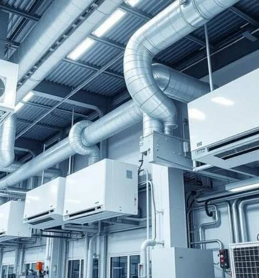
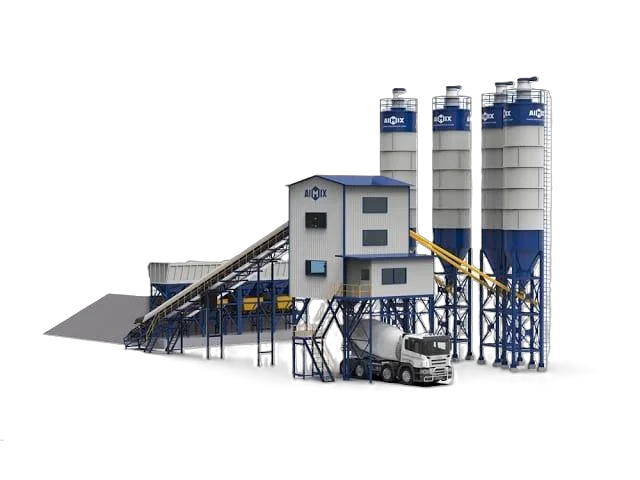
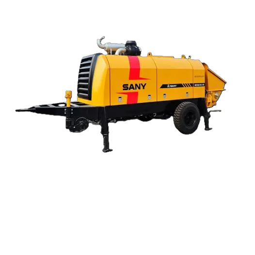
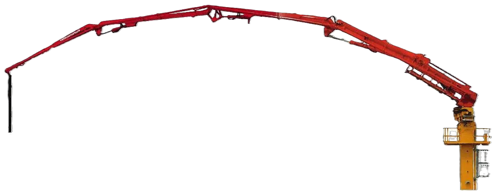
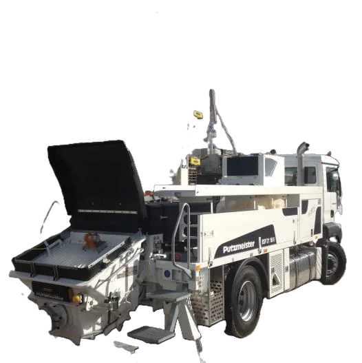
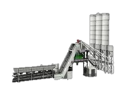
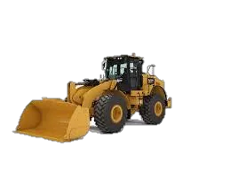
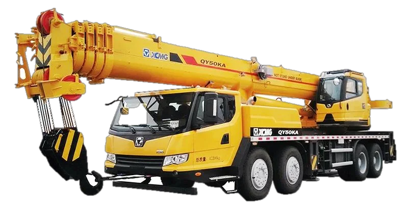

01
Cooling & Refrigeration
Chillers, ice plants, refrigeration rooms and central cooling systems, supported from installation through maintenance.
ChillersIce PlantsCentral Cooling
Equipment & systems
Hajjanco brings supply, installation, operation, maintenance and lifecycle support together across concrete, cooling and industrial equipment.
Capability overview

Chillers, ice plants, refrigeration rooms and central cooling systems, supported from installation through maintenance.

Plant supply, installation, operation, maintenance and technical support for ready-mix production.

Stationary concrete-pumping equipment supported with operation, maintenance and component sourcing.

High-rise concrete distribution equipment including placing booms, spiders and pipeline systems.

Material-processing and recovery systems for concrete and industrial production environments.

Integrated plant support for precast operations and block manufacturing facilities.

Equipment and technical support for asphalt production and associated industrial systems.

Heavy equipment and machinery solutions for construction, infrastructure and industrial operations.
Existing equipment
Share the equipment type, current condition and site location.
Request Service →New requirement
Tell us the required capacity, application and project stage.
Start an Enquiry →